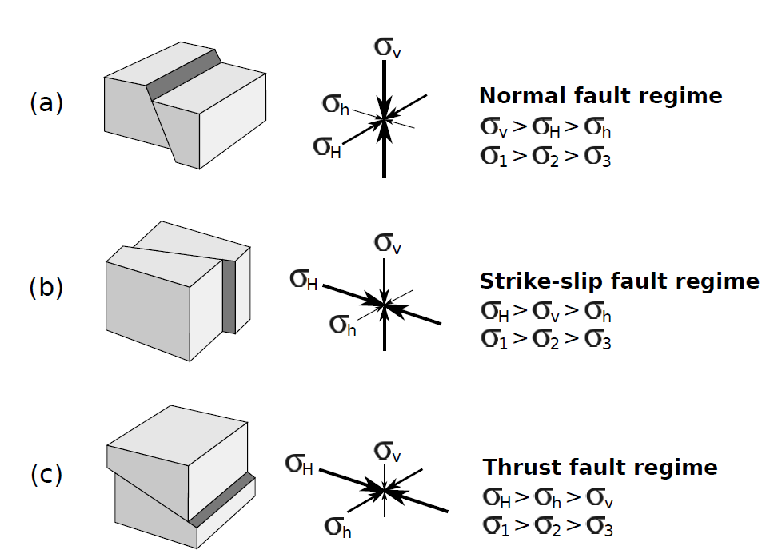
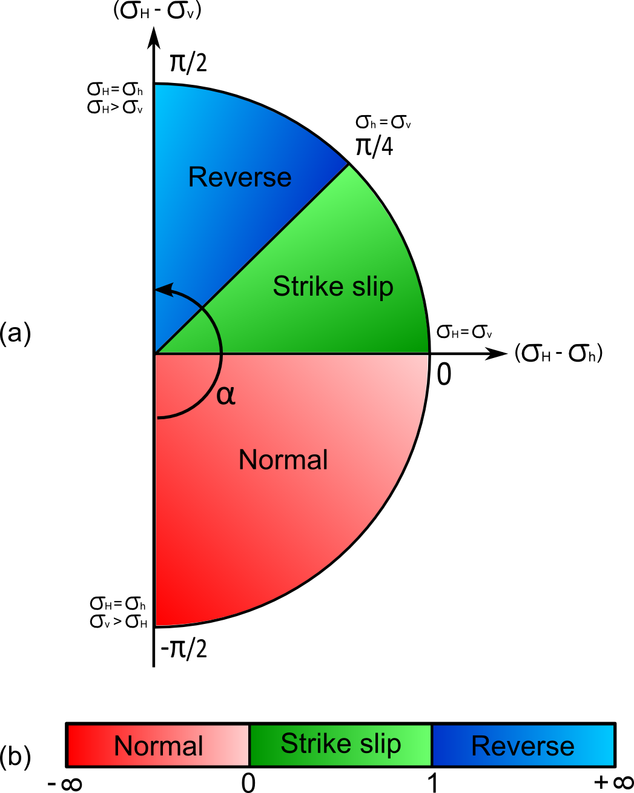
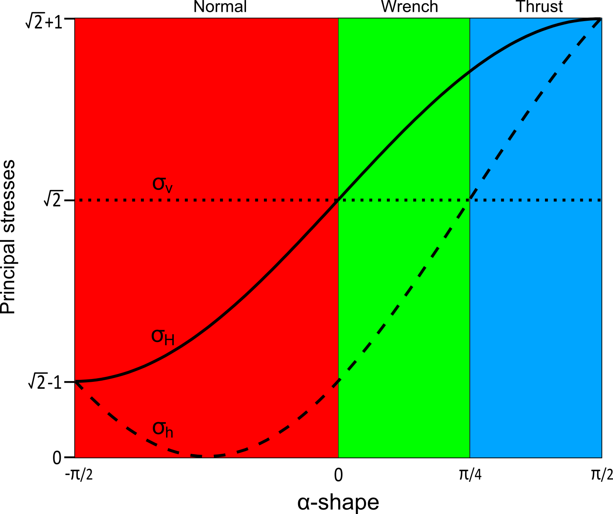

An Andersonian remote stress is a particular remote stress where one principal axis is vertical.
Depending on which of the principal axis is vertical (maximum, minimum, intermediate), we have a different
Andersoninan stress regimes.
All values are given in engineer convention, meaning that compression is negatif.
If the vertical axis corresponds to
the maximum principal stress: the regime is normal
the intermediate principal stress: the regime is strike-slip
the minimum principal stress: the regime is reverse

Anderson's faulting theory and stress regimes: a) strike-slip fault movement, when SH > SV > Sh; b) reverse or thrust fault movement, when SH > Sh > SV; and c) normal fault movement, when SV > SH > Sh.
example
constrho = 2200// Density of the rock constRh = 0.1// Normalized Sh according to Sv constRH = 0.6// Normalized SH according to Sv constg = 9.81
Get the stress ratio in [0, 1], which is (S2-S3)/(S1-S3) with S1 the maximum principal
stress (compression is positive), S2 the intermediate and S3 the minimum principal
stress. In addition, you have to call regime to know the the stress regime as there's
an ambiguity to use only R to characterize an Andersoninan stress.
Another representation of the stress ratio and stress regime together using only one
parameter in [0, 3]. It is essentially the same as R except that
it includes both the stress ratio and the stress regime
Another representation of the stress ratio and stress regime together using only one
parameter which is an angle between -90° and +90°. This parameter is usually called alpha-shape.
An explanation will be given soon to
justify this representation.
for alpha in [-90° , 0°], we have a normal regime
for alpha in [ 0° , 45°], we have a strike-slip regime
for alpha in [45° , 90°], we have a reverse regime

Representation of the alpha-shape as an angle

Relations between alpha-shape and the three principale stresses
Returns number
regime
regime(): string
brief
Get the stress regime. Can be either normal, strike-slip or reverse
Returns string
setSH
setSH(cb: Function): any
brief
The magnitude of the maximum horizontal stress (Sigma H) value which can be
given by a number, a string or a callback.
default
0
Parameters
cb: Function
Returns any
setSh
setSh(cb: Function): any
setSh(cb: number): any
brief
The magnitude of the minimum horizontal stress (Sigma h) value which can be
given by a number, a string or a callback.
default
0
Parameters
cb: Function
Returns any
brief
The orientation in degrees of the maximum horizontal stress according to the North
(global y-axis) and clock-wise.
default
0
Parameters
cb: number
Returns any
setSv
setSv(cb: Function): any
brief
The magnitude of the vertical stress (Sigma v) value which can be given by
a number, a string or a callback.
An Andersonian remote stress is a particular remote stress where one principal axis is vertical. Depending on which of the principal axis is vertical (maximum, minimum, intermediate), we have a different Andersoninan stress regimes.
All values are given in engineer convention, meaning that compression is negatif.
If the vertical axis corresponds to